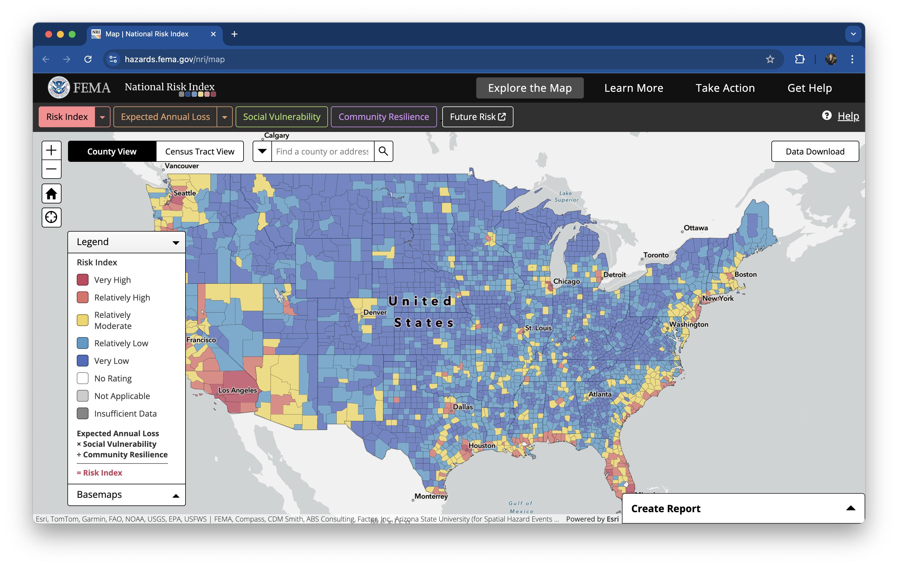
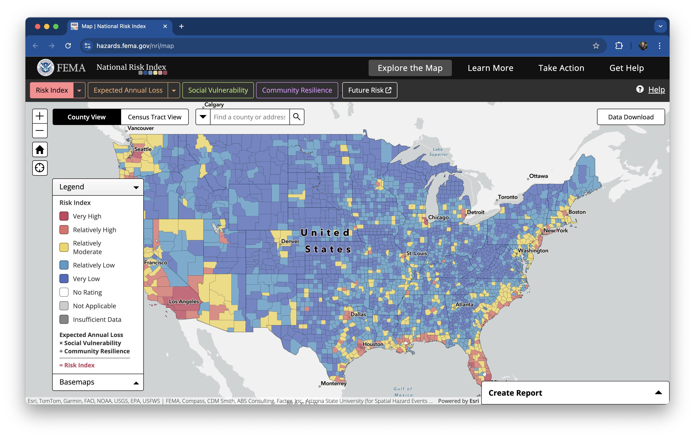

Screenshot of the The National Risk Index’s interactive mapping and data-based interface

Assigned Tue 01/21/2025 | Due Tue 02/04/2025
Read each part of the assignment carefully, and use the check boxes to ensure you’ve addressed all elements of the assignment!
{ggplot2} + ggplot2 extension packagesIn class, we’ve been discussing strategies and considerations for choosing the right graphic form to represent your data and convey your intended message. Here, you’ll apply what we’re learning to natural hazards and demographics data, courtesy of the FEMA National Risk Index (NRI) and the US Census Bureau’s American Community Survey (ACS).
Unfold the following note to read more about the data before continuing on (collapsed to save space):
FEMA (Federal Emergency Management Agency) is a government agency with a mission of helping people before, during, and after disasters. In 2021, FEMA launched the National Risk Index (NRI), “a dataset and online tool to help illustrate the United States communities most at risk for 18 natural hazards”.
Risk is defined as the potential for negative impacts resulting from natural hazards. It’s calculated using the following equation (and illustrated in this graphic; read more about determining risk):
\[Risk\:Index = Expected\:Annual\:Loss \times \frac{Social\:Vulnerability}{Community\:Resilience}\]
NRI provides hazard type-specific scores, as well as a composite score, which adds together the risk from all 18 hazard types. A community’s risk score is represented by its percentile ranking among all other communities at the same level for Risk, Expected Annual Loss, Social Vulnerability and Community Resilience – for example, if a given county’s Risk Index percentile for a hazard type is 84.32 then its Risk Index value is greater than 84.32% of all US counties. Each community is also assigned a risk rating, which is a qualitative rating that describes the community in comparison to all other communities at the same level, ranging from “Very Low” to “Very High.”
You can learn more about the NRI at hazards.fema.gov/nri.

Screenshot of the The National Risk Index’s interactive mapping and data-based interface
Data at the county- and census tract-level are available for download in multiple formats (including Shapefiles & CSVs) from NRI’s Data Resources page.
The American Community Survey (ACS) is a nationwide, continuous survey designed to provide communities with reliable and timely social, economic, housing, and demographic data every year. Unlike the Decennial Census (which counts every person in the US every 10 years for the purpose of congressional appointment), the ACS collects detailed information from a small subset of the population (~3.5 million households) at 1- and 5-year intervals. Learn more about the differences between these 1- and 5-year estimates.
The US Census Bureau provides a couple of tools for accessing their data, including:
However, when working in R, the {tidycensus} package is arguably the easiest way to query and retrieve Census data – use the get_acs() function to obtain ACS data for specified geographies (e.g. counties or census tracts), tables (e.g. B02001), variables (e.g. B02001_002, B02001_003), years (e.g. 2023), states (e.g. CA), surveys (e.g. acs1, acs5), etc.
The following sections (Part 1b - 1d) should be completed via GitHub Classroom (find and accept the assignment link on Slack). Read on for the full assignment description.
Create a data viz that helps to answer the question, How do FEMA National Risk Index scores for counties in California compare to those in other states?, following these steps:
NRI_Table_Counties/ folder into a data/ folder in your HW repository.data/ folder to .gitignore: So we don’t accidentally push our data to GitHub!NRIDataDictionary.csv: NRI_Table_Counties/ contains a few different files, including this CSV file which describes each of the NRI variables found in NRI_Table_Counties.csv. This is a helpful place to start!NRI_Table_Counties.csv: This is your data.(You’ll also want to repeat this process when creating your second data viz in Part 1c)
Create a data viz that helps to answer the question, How does climate hazard risk exposure vary across racial / ethnic groups in California?, following these steps:
tidycensus::get_acs(): You’ll need your API key to use {tidycensus} (revisit week 2 pre-class prep instructions, if necessary). You may use the following code:#.........see all available ACS variables + descriptions.........
acs_vars <- tidycensus::load_variables(year = 2023,
dataset = "acs1")
#..................import race & ethnicity data..................
race_ethnicity <- tidycensus::get_acs(
geography = "county",
survey = "acs1",
variables = c("B01003_001", "B02001_002", "B02001_003",
"B02001_004", "B02001_005", "B02001_006",
"B02001_007", "B02001_008", "B03002_012",
"B03002_002"),
state = "CA",
year = 2023) |>
dplyr::left_join(acs_vars, by = dplyr::join_by(variable == name)) # join variable descriptions (so we know what's what!).csv: It’s always a good idea to write your data (i.e. the race_ethnicity data frame, from above) to file, in case the Census Bureau’s API goes down. You may use the following code:.qmd fileYour rendered .qmd file should be polished and neatly organized. Be sure to consider / implement (as appropriate) the following:
You must complete the following, as detailed below, to receive a “Satisfactory” mark for Assignment #2, Part I:
eds240-hw2-username/Part1.qmd):
Everyone receives one “free pass” for not successfully submitting assignments via specified channels, after which you will receive a “Not Yet” mark.
Choosing an incorrect graphic form (i.e. one that’s inappropriate for your data) will result in a “Not Yet” score. However, there are numerous graphic forms which may be appropriate. Your final plots should clearly display the variables of interest, and you should be able to justify your choice in your written responses.
End Part I
Note: This part of HW #2 is a continuation of HW #1, Part II and is the next step in working towards your final course assignment. Your final assignment is meant to combine nearly all of the course learning outcomes(!):
{ggplot2} + ggplot2 extension packagesPlease begin by re-reading HW #4 in full as a reminder of the options, goals, and requirements for your final class assignment.
This week, you’ll focus on importing and wrangling your data (found as part of HW #1, Part II), followed by the exploratory data visualization phase. Complete the following:
After completing the above steps, answer the following questions:
You must complete the following, as detailed below, to receive a “Satisfactory” mark for Assignment #2, Part II:
lastName-eds240-HW4 repo, not in GitHub Classroom:
See details below.
End Part II